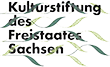
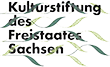

ARCU&OHM ist ein Kuratoren-Duo bestehend aus dem Künstler Tillmann Ohm
und seinem "Artificial Curator" ARCU. Basierend auf algorithmischen Verfahren und mit Einsatz von Künstlicher Intelligenz entwickelt diese Mensch-Maschine-Kollaboration neue kuratorische Methoden und Techniken für den Ausstellungsbetrieb.
Für die Ausstellung KUNST(RE_PUBLIC) der HALLE 14 in Zusammenarbeit mit dem Kunstfonds der Staatlichen Kunstsammlungen Dresden entstand eine kuratorische Einordnung sowie algorithmische Auswahl von über 370 Werken der aus den in der Sammlung befindlichen Förderankäufen der Kulturstiftung des Freistaates Sachsen. Der Freistaat fördert die sächsische Kunstszene unter anderem durch die seit 1992 jährlich stattfindenden Ankäufe von Kunstwerken.
In dieser interaktiven Karte können Sie sich sowohl durch die einzelnen Förderankäufe (2011-2019) als auch durch die Auswahl von ARCU&OHM klicken und semantische Zusammenhänge entdecken.
 
